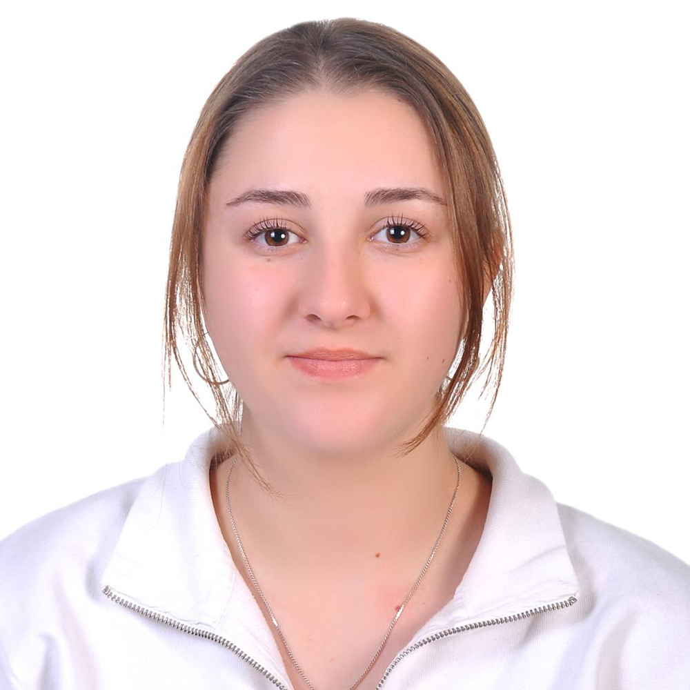

Education
IDV Private Bilkent High School
IB Double Diploma Programme - Anticipated Graduation: July 2025
- September 2021 - Ongoing
- Ankara, Turkey
- HL: Mathematics (Analysis and Approaches), Biology, English B
- SL: Turkish A, Chemistry, Environmental Systems & Societies
- Extended Essay: Turkish A – In Leyla Erbil's "Tuhaf Bir Kadın", how is the main character's existential struggle under the pressure of a patriarchal society conveyed through narrative conflicts?
- Also follow the Turkish Ministry of Education high school curriculum (Science - Math Concentration)
Experience
AMG Chemistry
Intern
- Fall 2024
- Completed a 1-week distanced internship at a feed and vitamin additive manufacturer located in an organized industrial zone to learn more about the quality control procedures within the food and agricultural industries to ensure human, animal and plant health
- Researched the company's held certificates of quality from the International Organization for Standardization (ISO)
- Learned about the company's integrated management systems policies that emphasize sustainability, work safety and environmentally conscious business decisions from all departments
Leadership Skills
Knowledge Exchange: Various Health Posters for School
- August 2024 - Ongoing
- Wrote academically researched short articles on the following topics,
following MLA referencing:
- The biological role of gut microbiota in human health and disease, and how people can change their diets to gain the most benefit
- Plan to write further articles on topics of managing anxiety and mental health, introduction to food and health, and the impact of climate change on biodiversity and ecosystem services
- Design and post informatory posters at school on the articles to translate their academic language into more easily digestible tidbits to enlighten peers on the topics as well as guide them into researching the resources provided using QR codes to direct them to the full article
Academic Enrichment
Private Algorithm Tutoring
- June 2024 - Ongoing
- Work through computer-based logic to learn about algorithmic and abstract thinking and use this approach in solving various riddles with plans on applying this knowledge in programming in the future with C and Python
HarvardX
Building Personal Resilience - Managing Anxiety and Mental Health
- June - July 2024
- Studied neuroscientific subjects such as the functions of the prefrontal cortex and the amygdala in emotional regulation and emotional flexibility
- Learned about how cognitive behavioural therapy helps in overcoming fear and anxiety by working on changing thoughts and perspectives to influence further change in emotional regulation and behaviours
StanfordOnline
Introduction to Food & Health
- June - July 2024
- Watched, read and analysed instructional media to learn about scientifically well-established healthy nutritional practices to get the best outcomes for both patients and medical experts through innovative educational strategies